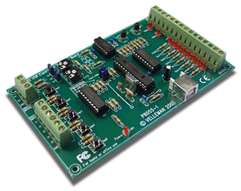
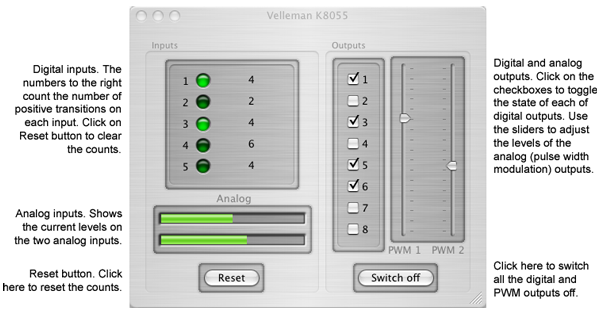

 K8055 allows your Mac (Panther or later) to communicate with a Velleman K8055 USB digital I/O board. Right now pretty much all it does is let you click on the buttons to control the outputs and monitor the state of the inputs. It's open source though so you can take the code that talks to the K8055 and build it into your own applications. For the next release I'll make it work with Applescript and then you'll be able to write useful scripts that do things like turn your desk fan on every time you get a new mail or delete all your MP3s every time someone rings the doorbell; you know: really useful stuff...
After those things are done I'll produce a cross platform library (Window, Linux, Mac) that provides the same entry points as Velleman's closed source Win32 only DLL.
Here's a quick guided tour:
